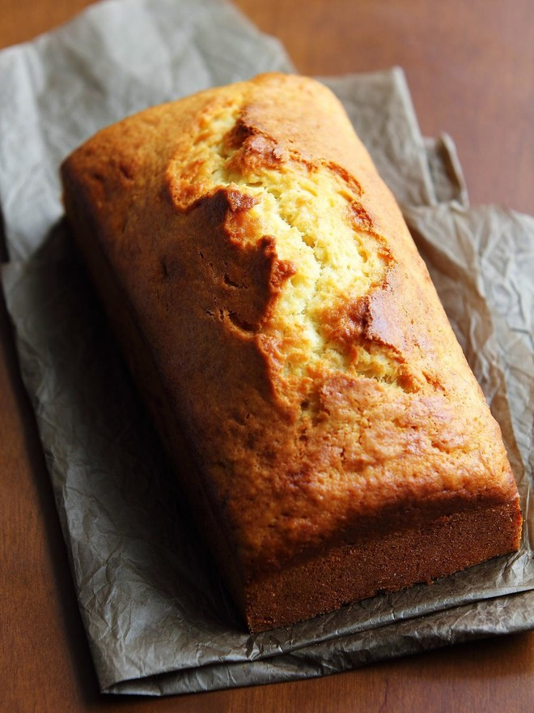
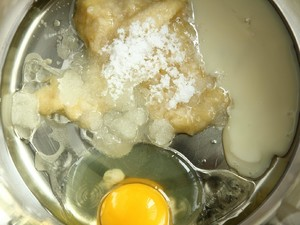
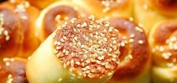
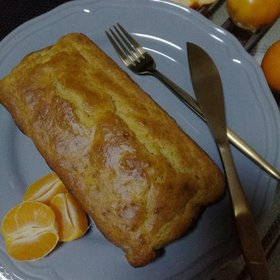

搜菜谱
首页
菜谱分类
菜单
作品动态
登录
注册
首页 > 蛋糕 > 简单香蕉蛋糕
简单香蕉蛋糕

7.4综合评分 9756 人做过这道菜
收藏
沈知味
这款香蕉蛋糕最大的特点是简单，不需要室温软化黄油，也不用打发鸡蛋，只需要10分钟的准备工作，然后丢进烤箱即可，美味毫不打折。懒人快手食谱又一发~
----------------------------------------
配方的量已经调整，比之前味道更好
----------------------------------------
新发现，这款蛋糕用长吐司模做基本顶端都会裂开，如果用圆蛋糕模或者玛芬模烤顶端不容易裂缝或者裂缝不规则。另外我觉得开花这件事和模子的大小有关，如果模子大面糊量小，散热好，就不容易裂开。我试过将做剩下的面糊倒在蛋糕模里，铺了一薄层，烤出来就没开花
----------------------------------------
方子里用的是炼乳，有人问能不能用牛奶代替。我没试过，理论上因为牛奶比较稀，所以方子里的油要减少一点，然后烤的时候时间再长个五六分钟，大家可以试着做一下。但建议最好是用炼乳，因为味道好。
----------------------------------------
有人问为什么做出来很扎实想馒头。原因大概有以下两种：1、没有用低筋面粉；2、最后一步过度搅拌了，只要没干面粉了就停止搅拌，另外不要划圈搅，和炒菜一样的姿势去搅拌
用料
香蕉
一根
低筋面粉
100g
泡打粉
5ml(一勺)
白糖
20g
鸡蛋
一只
炼乳
30ml
植物油
40ml
简单香蕉蛋糕的做法
1 将香蕉压成泥和鸡蛋、炼乳、白糖、植物油一起放入大盆

1 将香蕉压成泥和鸡蛋、炼乳、白糖、植物油一起放入大盆
1 将香蕉压成泥和鸡蛋、炼乳、白糖、植物油一起放入大盆
1 将香蕉压成泥和鸡蛋、炼乳、白糖、植物油一起放入大盆
1 将香蕉压成泥和鸡蛋、炼乳、白糖、植物油一起放入大盆
小贴士
1、植物油选择没有味道的，比如玉米油和葵花籽油。不要用花生油和橄榄油。
2、使用15cm×7.7cm×7.7cm吐司模烤制，是450g吐司模的一半大。
简单香蕉蛋糕所在分类
蛋糕
烘焙
烤箱
被大家加入到以下菜单

蛋糕卷，瑞士卷 卷起来
蛋糕卷，瑞士卷 卷起来
蛋糕卷，瑞士卷 卷起来
蛋糕卷，瑞士卷 卷起来
蛋糕卷，瑞士卷 卷起来
参照这个菜谱，大家做出 11195 作品
全部11195个作品

3小时前
深夜放毒～ 很美味哦！
心海的飞扬
3小时前
深夜放毒～ 很美味哦！
心海的飞扬
3小时前
深夜放毒～ 很美味哦！
心海的飞扬
上传你做的简单的香蕉蛋糕
该菜谱创建于 2013-01-06 23:38:37
189300 收藏
版权归作者所有，没有作者本人的书面许可任何人不得转载或使用整体或任何部分的内容。
简单香蕉蛋糕的答疑
雨天晴天 5年前
我就想知道5ml泡打粉是什么概念，因为它不是液体的嘛，放多放少了都会不行的，请麻烦告诉我一下行吗？
作者回复 5年前
泡打粉是粉状的，我用5ml的量勺量了一勺
130赞
雨天晴天 5年前
我就想知道5ml泡打粉是什么概念，因为它不是液体的嘛，放多放少了都会不行的，请麻烦告诉我一下行吗？
作者回复 5年前
泡打粉是粉状的，我用5ml的量勺量了一勺
130赞
雨天晴天 5年前
我就想知道5ml泡打粉是什么概念，因为它不是液体的嘛，放多放少了都会不行的，请麻烦告诉我一下行吗？
作者回复 5年前
泡打粉是粉状的，我用5ml的量勺量了一勺
130赞